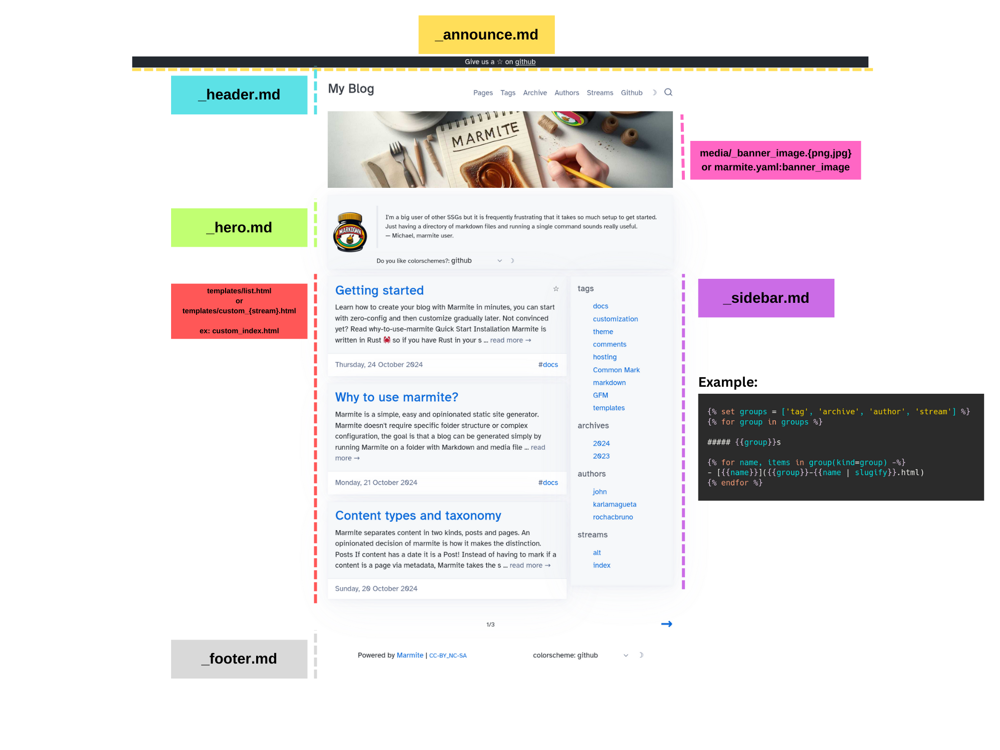
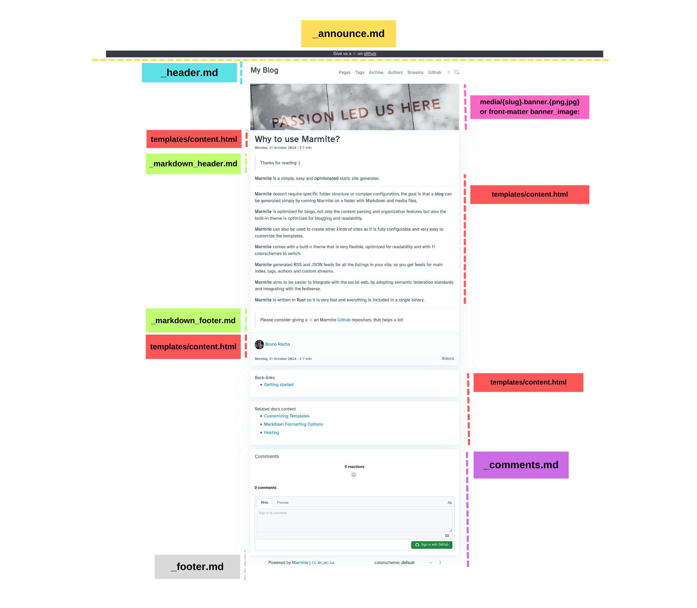

Using Markdown to customize layout
Friday, 18 October 2024 - ⧖ 1 minListing Page
The following fragments allow markdown and HTML and are rendered by Tera so it is possible to use template expressions.
The global context is available for templating.
_announce.md_header.md_hero.md_sidebar.md_footer.md

The listing itself is only customizable via
templates/list.htmlortemplates/custom_{stream}.html
Content Page
The following are static content NOT rendered by template engine so those allow only raw HTML and markdown
_markdown_header.md_markdown_footer.md
The _comments.md allows template rendering with global context.
_comments.md

The Title, Main content, Info and Related content are customizable only via
templates/content.html
References
_references.md
This is an invisible file that is appended to every other markdown so links and footnotes are reusable.
_references.md
[Github]: https://github.com
then on any markdown [Github] will resolve to the reference link.
Scripting and Style blocks
You can add extra scripts and styles to the <head> tag using _htmlhead.md
_htmlhead.md
<script defer src="https://analytics.service.com" data-website-id="c8fbd715-5b90"></script>
<style>
selector {
property: value;
}
</style>
If the script needs to go to the bottom of page use _htmltail.md
That is available mostly to be used as analytics entrypoint, for custom styling we recommend
using the custom.css
Please consider giving a ☆ on Marmite Github repository, that helps a lot!